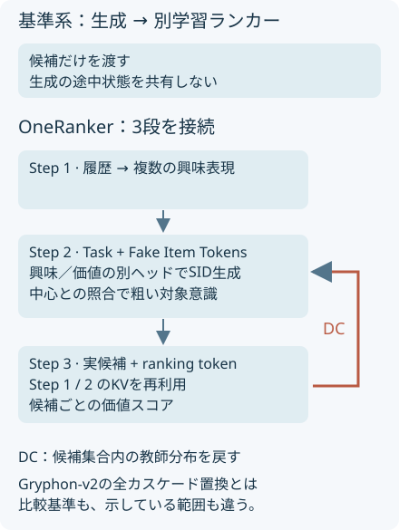
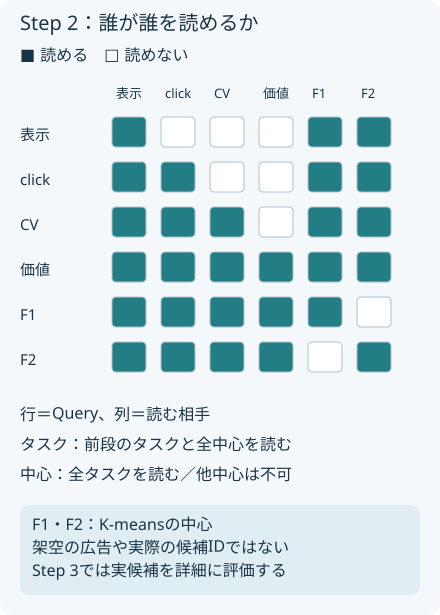

概要
OneRankerは興味と広告価値の出力を分け、生成時の表現をランキングへ渡す。Weixin ChannelsのA/Bでは生成モデル＋別学習ランカーを基準に改善を報告した。広告の全カスケードを撤去した証拠とは区別して読む。
問題設定
クリックと価値はずれる。単一の出力へ両方の目的を押し込むと競合し、別モデルへ完全に分けると生成中に価値の情報が届かない。共有と分離の境界が問題になる。
核心
著者の主張 · 論文に書かれていること
著者は、タスクトークンによる出力空間の分離、クラスタ中心による粗い候補意識、候補単位のランキングを一体化する。生成とランキングの入力を共有し、ランキングの軟らかい教師分布を生成へ戻す。A/B後の100%展開を報告する（§3、§4.4）。
解釈・批評 · 読書メモ
価値の高い広告が候補生成で落ちれば、後段の優秀なランカーでも救えない。DCはこの境界を学習で動かす設計と読める。ただし教師が誤る場合や候補集合に偏りがある場合、整合性だけが高まっても利益は改善しない。Gryphon-v2との比較では、モデル数より実際に置換したサービング範囲を確認したい。
統合するのは生成とランキングの接続
{kind=link}

モデル / 手法
3段の接続で、候補生成と価値推定を結ぶ
Step 1はユーザー履歴から複数の興味表現を作る生成基盤である。原典はHSTU/GPR系を比較対象とし、U/C/X/I（ユーザー・コンテンツ・文脈・アイテム）で履歴を時系列に並べる。Step 2はその出力をKey/Valueに、タスクトークンとFake Item TokensをQueryにする。Cross-Attentionで履歴を読み、その後にSelf-Attentionを行う（§3.1–3.2）。
タスクは表示→クリック→コンバージョン→価値の順序を持つ。参照は一方向だ。後段から前段を読む。タスクごとに独立した予測ヘッドを置き、興味ヘッドはクリック等を、価値ヘッドは価値重みつきサンプリングを学習する。たとえばクリックへつながる候補を広く拾う経路と、広告価値を重視して拾う経路を同じ履歴表現から学習しても、予測ヘッドを分けておけば、一つの出力に二種類の順位を同時に表させる必要はなくなる。これがMTPの出力を分ける狙いだ。
Fakeは架空の広告ではなく、アイテム空間の代表点
全アイテムをK-meansでまとめたk個の中心fを使う。タスクはすべての中心を読め、中心もすべてのタスクを読める。一方、異なる中心同士は読めない。これが異種マスクであり、Query全体へ通常の三角マスクを一律に適用する説明では不十分になる。
タスク表現Tᵢと各中心Fⱼを連結してMLPへ通し、k次元の出力を足すとs_target⁽ⁱ⁾になる。候補アイテム側では各中心とのcos類似度cを付ける。Eq. (1)–(4)の要点は次の内積である。
e_user = [e_task ; s_target]、e_item_enhanced = [e_item ; c]
score(u,item) = e_task · e_item + Σ_l s_target,l c_l
前半は意味の一致。後半は領域への好みだ。生成前に特定候補の詳細をすべて読む必要はないが、中心が粗すぎれば細かな商品差は残る。
ランカーには実候補と生成途中の状態を渡す
Step 3はランキング用トークンと生成した候補をQueryにし、Step 1とStep 2の出力をKey/Valueとして再利用する。1層のランキングdecoderと軽いMLPが候補ごとのスカラーを出す。候補同士は見えず、各候補はランキングトークンを読める。生成時の粗い対象意識を、ここで実候補への詳細な相互作用に置き換える（§3.3）。
L_total = α L_MTP + β L_rank + γ L_DC
L_rank = −E_(i,j)[1(y_i > y_j) log σ(s_i − s_j)]
q_i = softmax(s_i / τ)、L_DC = −Σ_(i∈C) q_i log πθ(i|u)
ランキングはeCPMラベルyの大小をBPRで学ぶ。DCは現在の候補集合Cで正規化したランキングスコアを教師にする。最後の式はEq. (10)の期待値を候補上の重みつき和として示したもの。SIDの尤度学習も残す。DCだけで動くモデルではない。Eq. (9)の報酬と参照方策へのKLを用いる目的から、サンプリングの不安定さを避ける教師あり代理損失へ進む説明である。
タスクの順序とクラスタの可視性は別に決める
{kind=link}

なぜ効きそうか
解釈・推論
興味タスクの出力を維持したまま価値用の経路を追加すれば、価値重視の学習が興味の表現を直接置き換える圧力を減らせる。Fake Item Tokensは全候補との詳細な相互作用を避けつつ、アイテム空間のどの領域を好むかを表せる。これは設計上の推論で、共有層の勾配競合が消える保証ではない。
根拠
大きな差はStep 3の追加にある
以下は提供PDF Table 2の著者報告。HR@5を比較すると、Step 2から候補単位のランキングへ進む差が、DC単独の差より大きい。
| 構成 | HR@5 | NDCG@5 |
|---|---|---|
| S2、TargetとMDAを除去 | 0.5066 | 0.7275 |
| S2、Targetを除去 | 0.5203 | 0.7285 |
| S2 | 0.5448 | 0.7440 |
| S3 ranker only | 0.6157 | 0.7849 |
| S2 token injectionを除去 | 0.6161 | 0.7858 |
| DCを除去 | 0.6173 | 0.7865 |
| Full | 0.6213 | 0.7904 |
原典§4.2.1の説明文は0.6161と0.6173に対応する追加要素をTable 2と逆に説明している。本Labは表の行名を採用した。したがって本文の説明を根拠に、個別要素の寄与を細かく断定しない。Table 3ではS2のHR@5がCross-Attention先行の除去で0.5277、異種マスクの除去で0.5335になる。
+1.34%は全トラフィック共通の効果ではない
Table 4の基準系は生成＋別学習ランカー。GMV-Normalはクリック／コンバージョン最適化広告のGMVである。
| A/Bのtraffic phase | GMV-Normal相対変化 | 95% CI | 全GMV相対変化 |
|---|---|---|---|
| 5% | +1.3427% | [0.1637%, 2.5216%] | +0.4067% |
| 20% | +0.6446% | [0.2139%, 1.0754%] | +0.7796% |
| 80% | +0.3500% | [0.0188%, 0.6812%] | +0.0843% |
5%と80%の全GMVのCIは0をまたぐ。著者は80%段階にtraffic coverageの現象があると記すが、補正方法は詳述しない。100%展開は採用の証拠であり、その段階で+1.34%を再測定したという意味ではない。会議名・DOIにテンプレート文字列が残るため、出版先は確定情報として扱わない。一次資料：§4、Tables 2–4。
実行可能な理解
uv run papers/oneranker-ads/run.py
第一の例は同じ入力xに興味目標x、価値目標−xを与える回帰である。共有出力とタスク別出力の最適解を比較する。第二の例は4候補を固定し、教師のsoftmax分布への交差エントロピーで生成logitを200回更新する。温度1、学習率0.2。
このLabは run.py 単体で実行できます。結果はコードと同じフォルダーに保存されます。
結果
生の results.json
{
"kind": "synthetic mechanism illustration",
"seed": "deterministic",
"metrics": {
"shared": {
"interest_mse": 2.5,
"value_mse": 2.5
},
"task_conditioned": {
"interest_mse": 0.0,
"value_mse": 0.0
}
},
"alignment": [
{
"step": 0,
"kl_teacher_generator": 1.9853054691715397,
"top2_disagreement": 1.0,
"generator": [
0.6439142598879724,
0.23688281808991013,
0.08714431874203257,
0.03205860328008499
],
"teacher": [
0.03205860328008499,
0.08714431874203257,
0.23688281808991013,
0.6439142598879724
]
},
{
"step": 10,
"kl_teacher_generator": 0.7815816938701511,
"top2_disagreement": 1.0,
"generator": [
0.39242662539994666,
0.27005230756725157,
0.1758424200506373,
0.1616786469821645
],
"teacher": [
0.03205860328008499,
0.08714431874203257,
0.23688281808991013,
0.6439142598879724
]
},
{
"step": 50,
"kl_teacher_generator": 0.03436535616545226,
"top2_disagreement": 0.0,
"generator": [
0.09219016364464891,
0.11087313151262973,
0.1970691646411637,
0.5998675402015577
],
"teacher": [
0.03205860328008499,
0.08714431874203257,
0.23688281808991013,
0.6439142598879724
]
},
{
"step": 200,
"kl_teacher_generator": 0.0007428244983350325,
"top2_disagreement": 0.0,
"generator": [
0.039171252261502996,
0.084641913714935,
0.23430190475057,
0.641884929272992
],
"teacher": [
0.03205860328008499,
0.08714431874203257,
0.23688281808991013,
0.6439142598879724
]
}
],
"counterexample": "A wrong teacher is also imitated; missing candidates cannot be recovered.",
"not_tested": [
"causal attention",
"interest coverage",
"production eCPM",
"latency",
"GMV"
]
}共有出力の興味・価値MSEはともに2.5、タスク別ではともに0になる。これは追加した出力自由度による差で、興味coverage改善の実証ではない。DCの例ではtop-2不一致率が1から0へ下がる。下のJSONには途中のKLと確率も保存する。
検証できたこと
Mechanism PARTIAL。矛盾する目標を一つの出力で表す制約と、固定候補内で教師分布を模倣する更新を確認した。タスクトークン、causal mask、Fake Item Tokens自体の有効性はこのtoyでは検証していない。
検証していないこと
本番eCPM、GMV、興味coverage、スケール、レイテンシーはNOT TESTED。教師の校正、候補外の高価値広告、複数タスクの共有勾配も未検証。Figure 3の曲線から精密な数値は読み取らず、順位一致が増えるという著者の観察に留める。
実装
conflict() は解析的最適解の損失を計算し、align() は交差エントロピーの勾配p−qで更新する。教師は固定する。出力を増やす実験と、分布を寄せる実験は分けた。数値はすべて合成データ由来。
原論文・公式コード対応
| 原典の機構 | Labの対応 | 省略したもの |
|---|---|---|
| PDF・HTML の手法節 | method.md と出典つきSVG | 原図の複製ではなく説明用に再構成 |
| 部分機構の合成例 | run.py → results.json | 本番データ、ニューラルモデル、論文の性能再現 |
| 公式実装 | 原典内で実行可能な公式コードURLを確認できず | 公式実装との同等性は未検証 |